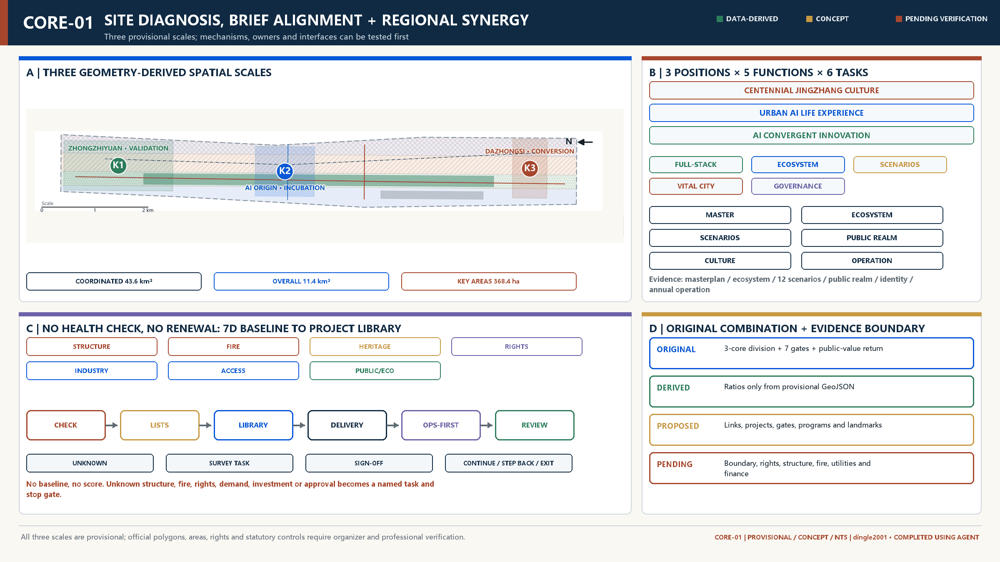
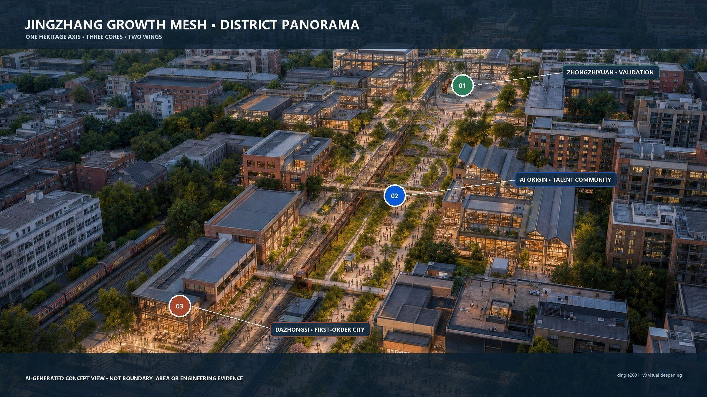
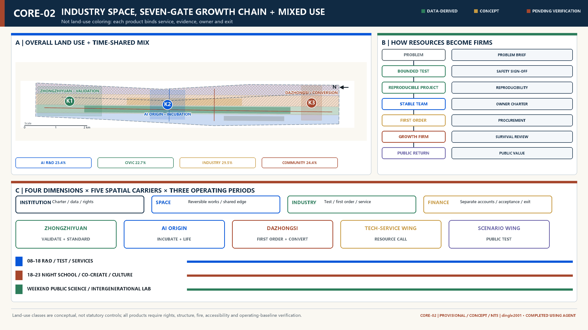
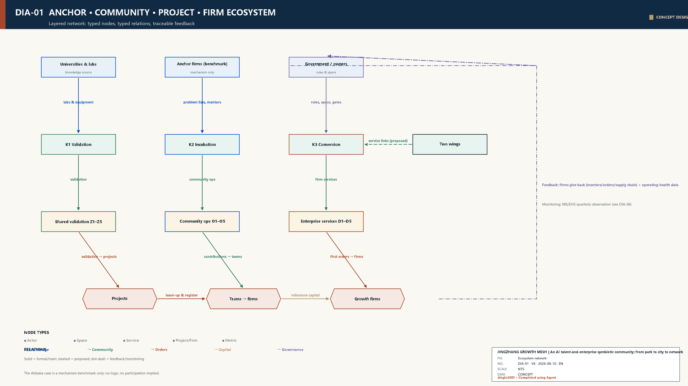
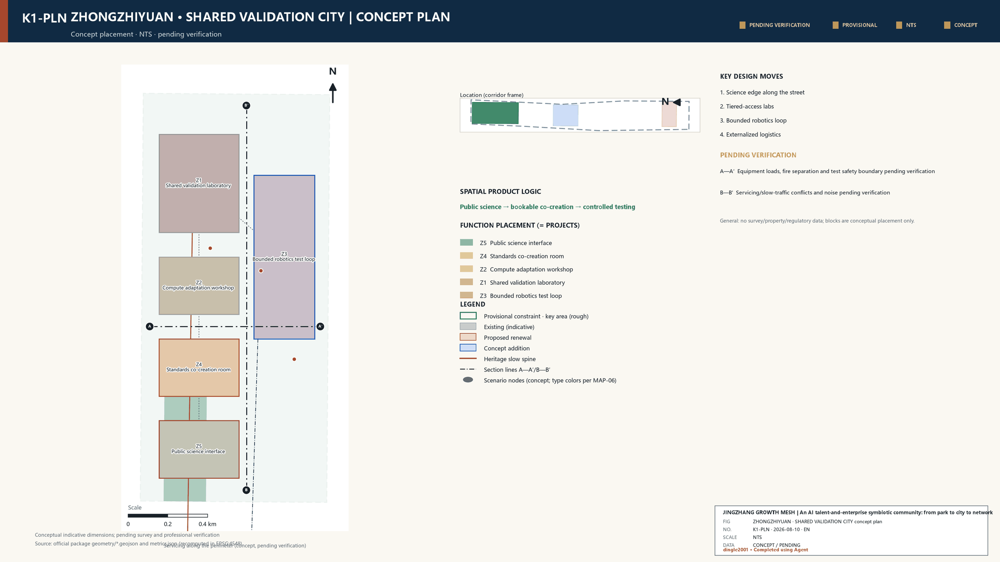
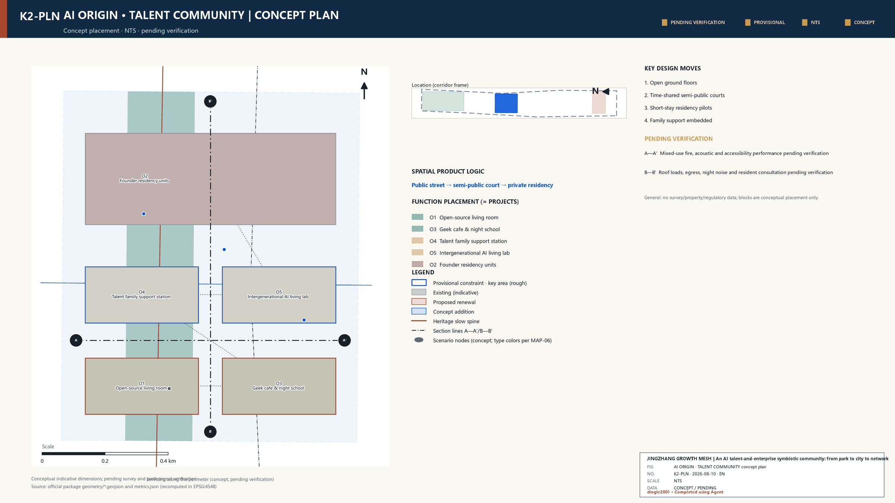
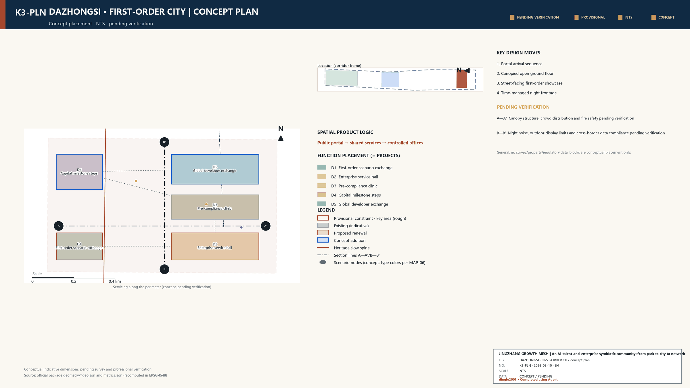
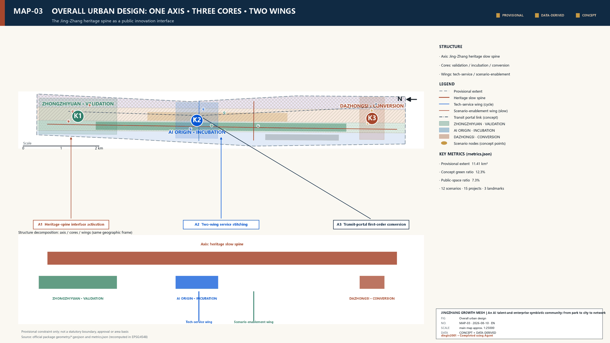
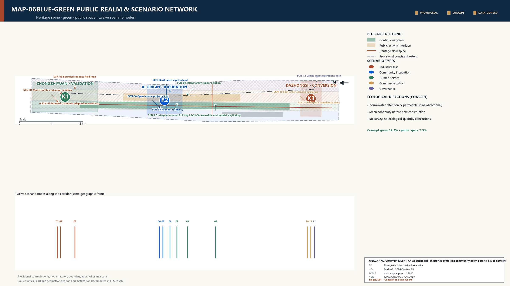
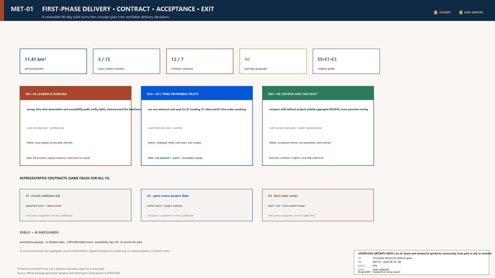

JINGZHANG GROWTH MESH | An AI Talent and Enterprise Community from Park to City to Network
Universities and leading firms are anchors, the district is an incubator, and community is infrastructure: one axis, three cores and two wings convert talent relations into projects and projects into firms.
JINGZHANG GROWTH MESH | An AI Talent and Enterprise Community from Park to City to Network
Core proposition: universities and leading firms are anchors, the district is an incubator, and community is infrastructure. Haidian does not lack innovation sources; it needs urban interfaces that turn talent relations into projects, projects into firms, and growing firms into the next round of shared capacity.
Design Basis and Source List
The proposal combines the public brief, repository site package, professional references and reproducible provisional geometry with the author's original Mars Plan theories: park-city-network evolution, the five-stage growth loop and enterprise lifecycle observation. Local research supplies methods only; no internal Chaoyang market-regulation data is copied. Facts about Alibaba Beijing headquarters, incubation and creator communities are rechecked against public primary district sources.来源 来源
Alibaba is not a headquarters-campus template and no external compute opening is assumed. It supplies three comparative mechanisms: a large anchor generates talent and demand; transit, talent life and public interfaces determine whether commuters become district users; and incubation, professional services and creator communities determine whether relations become projects. Jing-Zhang translates this into a multi-anchor network of universities, institutes, firms and professional services.来源 来源 来源
The SITE_BOUNDARY and three KEY_AREA polygons remain repository provisional constraints. They support concept generation and internal checks, not statutory, ownership or parcel decisions. New nodes, prototypes and links are design suggestions only.空间数据 深度

Three-Level Scope Framework
The coordinated study area asks how Haidian's AI resources form a collaborative network; the overall design area asks how the heritage park becomes a continuous innovation-living district; the key areas ask how validation, incubation and commercialization become tangible spatial products. One evidence chain links strategy, space, operations and metrics.标准 深度
Official polygons must replace provisional constraints before any statutory use. Land-use topology and all derived metrics must then be recalculated rather than retaining old values on a new base.空间数据 深度
Coordinated Research Area: Industry and Future City Research
The park supplied standardized production space; the city mixed work, life and services; the network enables knowledge, orders, talent and capital to move across nodes. AI is light-asset, mobile and weakly organized, so office supply alone cannot incubate firms. Shared compute and tests are the base, open scenarios the interface, communities the connector, and professional services and first orders the converter.来源
| Case | Mechanism | Jing-Zhang translation |
|---|---|---|
| Kendall Square | University research, firms and public space form a dense innovation district | Translate into walkable links and shared facilities near research anchors |
| King's Cross Knowledge Quarter | Cultural, research and public institutions form a cross-organizational knowledge network | Co-curate rail heritage and AI community programs |
| one-north | R&D, incubation, housing and public space mix within one urban district | Keep the three cores differentiated rather than building one office park |
| Paris-Saclay | Universities, laboratories, firms and transport infrastructure coordinate | Link research, validation and enterprise services |
| MaRS | Venture services, capital and community connect research outcomes | Translate into first-order and enterprise services at Dazhongsi |
| High Tech Campus Eindhoven | Shared laboratories and open innovation reduce collaboration costs | Translate into shared validation and standards co-creation |
| 22@Barcelona | An industrial district transforms gradually through mixed use, public space and innovation networks | Use reversible renewal and long-term operations |
Cases provide mechanism comparisons only; no media, foreign scale, investment or regulation is copied into Haidian.来源 来源 来源
Overall Design Area: Urban Renewal and Regulatory-Plan-Level Urban Design
The structure is one axis, three cores and two wings. The heritage park is the cultural, walking and innovation-display axis. Zhongzhiyuan validates, the AI Origin Community incubates, and Dazhongsi commercializes. The Zhongguancun wing makes policy, data, compute, IP, compliance and finance callable; the Xiaoyuehe wing turns mobility, environment, community and public-space questions into testable orders.空间数据 深度

The aerial uses the overall map, slow-mobility/blue-green network and three module views as visual references. It composes northern validation, central talent co-creation and southern first-order commercialization into one continuous railway-heritage innovation corridor. It is an AI-generated concept view, not evidence of existing buildings, boundaries, scale, engineering conditions or implementation commitments.[assumption:A-AI-VISUAL-006]

The five stages release affordable reversible space, insert bounded real scenarios, aggregate weak ties through open-source activity and clinics, generate verifiable projects, and help projects become durable entities through first orders, compliance, finance and talent services. Institution, space, industry and finance must move together.来源 深度

Land-use polygons form a complete provisional partition. FAR, height, road redlines, total floor area and utility capacity remain pending official controls and surveys.空间数据 标准 深度
Detailed Design of Key Areas
Each key-area sheet combines a concept plan, A-A' section and operating thresholds. Sections follow the drawing logic of architectural drafting references through grids, datums, bay/overall dimension chains, cut/projected lineweights, intervention legends, egress and accessibility cues. Every dimension is a prototype control dimension and every sheet remains explicitly concept-stage/NTS/pending specialist verification—not a survey, approval or construction document.标准 标准 来源
Zhongzhiyuan: shared validation city
A shared laboratory spine, bounded test loop, standards courtyard and public science edge separate high-security tests from public interfaces. Teams reserve equipment, produce reproducible test sheets and carry results into standards workshops and service catalogues. Large-span adaptable space is retained where feasible; lightweight observation walks and equipment rooms remain reversible. Structure, fire, loads and power require specialist checks.空间数据 深度

AI Origin Community: from co-location to working together
An open-source living room, project clinic, founder residency, cafe/night school and family support station serve research transfer by day, collaboration and learning by night, and public/intergenerational co-creation on weekends. Small units, short leases, shared rooms and open ground floors lower entry barriers. Residents, children and older people are never treated as free test subjects; consent, minimization, exit and offline alternatives come first.空间数据 来源

Dazhongsi: from project result to first customer
A transit gateway, enterprise-service street, first-order hall, compliance clinic and roadshow steps connect the city street to an internal public court. Flexible ground floors host services and demonstrations; upper floors host advisers and growing firms. The model is an accessible civic business interface, not a closed headquarters lobby.空间数据 深度


AI Innovation Ecosystem, Personas, and AI+ Scenarios
| # | Persona | Primary needs |
|---|---|---|
| 1 | Researchers | Research transfer, collaboration boundaries and trusted testing |
| 2 | Independent developers | Affordable desks, compute, open-source peers and a first customer |
| 3 | Startup teams | Project diagnosis, scenario orders, talent and organizational support |
| 4 | Growth companies | Validation facilities, professional services, expansion space and capital links |
| 5 | Services and investors | A standardized entry, trusted projects and milestone evidence |
| 6 | Resident families | Understandable, optional and reversible everyday services |
| 7 | Operators and stewards | Risk tiers, audit logs, human takeover and dynamic health checks |
Personas set thresholds, service entries, data boundaries and human fallback rather than targeting. The journey runs from research or interest through open source, stable team, demo, real validation, first order, entity formation and community return.
| ID | Scenario | Type | Space | Users | Governance boundary | Stage output |
|---|---|---|---|---|---|---|
| SCN-01 | Model safety evaluation sandbox | Industrial test | Zhongzhiyuan | Researchers and startup teams | Isolation, tiered authorization and human release | A reproducible test sheet and risk review |
| SCN-02 | Domestic compute adaptation workshop | Industrial test | Zhongzhiyuan | Developers and growth firms | Do not expose sensitive parameters; log bookings | A compatibility report and migration list |
| SCN-03 | Bounded robotics field loop | Industrial test | Zhongzhiyuan | Firms and operators | Limited time, speed and area; remote takeover | A scenario-validation record |
| SCN-04 | Open-source project clinic | Community incubation | AI Origin Community | Researchers and independent developers | Joint licensing, code, product and organization clinic | A project roadmap from contribution history |
| SCN-05 | Founder residency | Community incubation | AI Origin Community | Independent developers and startup teams | Short stays, mentor recusal and voluntary disclosure | A stable team and stage review |
| SCN-06 | AI talent night school | Community incubation | AI Origin Community | Researchers and resident families | Evening opening, co-created courses and no forced collection | Cross-institution weak ties |
| SCN-07 | Intergenerational AI living lab | Human service | AI Origin Community | Resident families and developers | Consent and special protection for children and older people | Everyday needs feeding back into product design |
| SCN-08 | Accessible multimodal wayfinding | Human service | Jing-Zhang public realm | Residents and visitors | Local-first, minimum collection and an off switch | More accessible public space |
| SCN-09 | Talent family support station | Human service | AI Origin Community | Researchers and resident families | Childcare referral, human emergency desk and privacy separation | Lower daily friction for talent |
| SCN-10 | First-order scenario exchange | Commercialization | Dazhongsi | Startup teams and growth firms | Log the chain from problem to validation and procurement | A first customer or public-scenario order |
| SCN-11 | Enterprise compliance clinic | Commercialization | Dazhongsi | Firms and professional services | AI assists; qualified professionals sign off | Lower registration, IP and operating trial costs |
| SCN-12 | Urban-agent operations desk | Governance | Dazhongsi / two wings | Operators and the public | Tiered permissions, audit logs, appeal and human takeover | A transparent operating-health loop |
All industrial tests have bounded space, accountable operators, human release and review. Public services use minimum necessary data, clear notice, shutoff, appeal and offline alternatives.指标 指标
Land Use, Building Scale, and Retain-Renovate-Demolish Strategy
The proposal establishes a procedure rather than parcel conclusions: assess structure, fire, heritage, rights and adaptability; retain usable buildings; use reversible ground-floor and passage upgrades; return demolition and new construction to official controls and approvals. Prototypes include validation halls, open-source living rooms, short-stay units, open service streets and lightweight display frames.空间数据 深度
Financial completeness does not mean inventing totals. The unit account treats space, equipment and professional services as separate revenue formulas; public space, infrastructure and inclusive services remain separate costs; equity returns never support basic debt service.[assumption:A-UNIT-ECONOMICS-007]
Transport, Rail, Municipal Infrastructure, and Public Services
The heritage axis carries walking, cycling, interpretation and public innovation; two wings provide lateral services; transit gateways use continuous ground floors, shelter, accessibility and short transfers. Robot tests never share unrestricted public lanes and require speed, time and area limits, remote takeover and incident review. Road geometry is conceptual.空间数据 深度
Infrastructure is shared rather than duplicated: secure tests at Zhongzhiyuan, low-barrier tools at Origin, and enterprise/operations systems at Dazhongsi. Power, communications, fire, utilities and compute supply await specialist verification; no internal corporate resource becomes a public commitment.

Blue-Green Network, Public Space, and Urban Character
The park is the ecosystem's public living room. Lunch supports short meetings and walking; evenings support running, night school and lightning talks; weekends support science and scenario experience. Anonymous passage and free stay are protected. Accessibility for children, older and disabled users precedes showcase technology.空间数据 空间数据
The Open-Source Milestone records verified public contributions along the rail trace; the Origin Co-creation Hall and Global Developer Node Wall show cross-city cooperation with rights clearance; the Dazhongsi Enterprise Growth Rings record stages from validation to first order and community return. The identity uses technology blue, railway rust, growth green and warm gray without unauthorized corporate marks.指标
Renewal Projects, Implementation Policy, and Phasing
| ID | Project | Area | Users | Suggested operator | Dependencies | Near-term action | Risk |
|---|---|---|---|---|---|---|---|
| Z1 | Shared validation laboratory | Zhongzhiyuan | Researchers and startup teams | Professional test operator + university labs | Verify structure, fire safety and equipment loads | Publish the equipment catalogue and booking rules | Safety incidents and idle equipment |
| Z2 | Domestic compute adaptation workshop | Zhongzhiyuan | Developers and growth firms | Compute provider + open-source community | Review compute provenance and data security | Release the first adaptation tasks | Resource availability misread as a commitment |
| Z3 | Bounded robotics test loop | Zhongzhiyuan | Robotics firms and the public | Site operator + accountable safety entity | Prepare mobility, insurance and remote-takeover plans | Mark low-speed windows and physical limits | Human-machine mixing risk |
| Z4 | Standards co-creation room | Zhongzhiyuan | Firms and standards bodies | Industry association + professional institutions | Define topics and IP boundaries | Run quarterly standards workshops | Meeting activity without deliverables |
| Z5 | Public science interface | Zhongzhiyuan | Residents and visitors | Park operator + science institutions | Physically separate visits from secure tests | Pilot weekend open-lab days | Promotion replacing public science |
| O1 | Origin open-source living room | AI Origin Community | Researchers and developers | Community operator + open-source maintainers | Verify existing space and fire safety | Pilot a weekly project clinic | Busy events but weak projects |
| O2 | Founder residency units | AI Origin Community | Independent developers and startup teams | Professional incubation operator | Verify leasing, residential and office compliance | Start with a small short-stay cohort | Rent and selection exclusion |
| O3 | Geek cafe and night school | AI Origin Community | Talent and residents | Community retail + course curators | Manage noise, business licensing and consumer rights | Pilot lightning talks and night classes | Resident disturbance and over-commercialization |
| O4 | Talent family support station | AI Origin Community | Young families, older people and children | Community service institution | Clarify childcare, eldercare and privacy compliance | Open a needs registry and referral desk | Unclear duty boundaries |
| O5 | Intergenerational AI living lab | AI Origin Community | Residents and developers | Community + technical teams | Establish ethics, consent and human fallback | Run small co-creation tests | Vulnerable groups treated as passive test subjects |
| D1 | First-order scenario center | Dazhongsi | Startup teams and demand owners | Industry operating platform | Define procurement and scenario-opening rules | Publish a problem catalogue | Implied orders or conflicts of interest |
| D2 | Enterprise service hall | Dazhongsi | Startup and growth firms | Professional service consortium | Make qualifications and fees transparent | Publish a service catalogue and booking desk | Duplicate provision and low use |
| D3 | Pre-compliance clinic | Dazhongsi | Firms and operators | Registration, IP, legal and other professionals | Require professional sign-off on AI-assisted advice | Issue a pre-opening compliance checklist | AI replacing professional judgment |
| D4 | Capital milestone steps | Dazhongsi | Project teams and investors | Operator + investment institutions | Manage disclosure and investor suitability | Run evidence-based milestone sessions | Misleading financing promotion |
| D5 | Global developer exchange | Dazhongsi | Developers and international institutions | Community operator + partners | Clear copyright, trademark and cross-border data limits | Connect online and physical nodes | One-off eventization |
In 0-1 years, begin with rules and pilots: space/equipment catalogue, problem list, clinics, pre-compliance checklist, community operations and three bounded tests. In 1-3 years, reversible works and service streets depend on evidence from pilots. In 3-5 years, consider replication, global events and long-term assets. Every stage has continue, adjust and exit gates.空间数据 深度
The proposed operating platform combines a public or ownership base, professional space/community/business operations, and a council of universities, firms, advisers and residents. Market regulation, law, IP, data and safety enter before fit-out and scenario launch; complaints, service use, enterprise changes, project conversion and public feedback support continuous operational health checks. This is a reference mechanism, not an assigned government duty.
Metrics, Area Recalculation, and Compliance Matrix
Geometry is recalculated by projecting EPSG:4326 to EPSG:4548. Site, green, public-space and footprint values are internal consistency evidence only.指标 指标 指标
NIS-Lite monitors active teams, projects, service calls, scenario orders and capital/first-order links. EHS-Lite monitors local generation, cross-actor collaboration, test-to-procurement conversion, entity survival/growth, and public value/risk. Quarterly observation feeds one- and three-year evaluation windows; no Haidian score is invented without public cleared baselines.指标 指标

Risk, Copyright, and Compliance
Risks include mistaking provisional geometry, AI views or conceptual projects for official decisions; excessive sensing; replacing professional approval with AI; excluding startups through rent; and rights violations. Controls are visible qualification, structured provenance, minimum data, human review, reversible trials, exit gates and rights clearance.[assumption:A-CONTROLS-001] [assumption:A-AI-VISUAL-006]
Five architectural and district-scale views are AI-generated and express experience only. This package was completed using Agent for research organization, structured data, figures, HTML, PPTX, PDF and consistency checks. Humans and professional teams retain final judgment. Public identity is dingle2001 only.
References
1. Official Jing-Zhang announcement and Agent taskbook. 2. Public Chaoyang sources on headquarters-area transit, AI incubation and creator-community mechanisms. 3. Author-cleared Mars Plan theory and methods. 4. Primary institutional sources for the seven international cases. 5. Local snapshots of professional urban-design, regulatory-planning, land-use and design-depth standards.